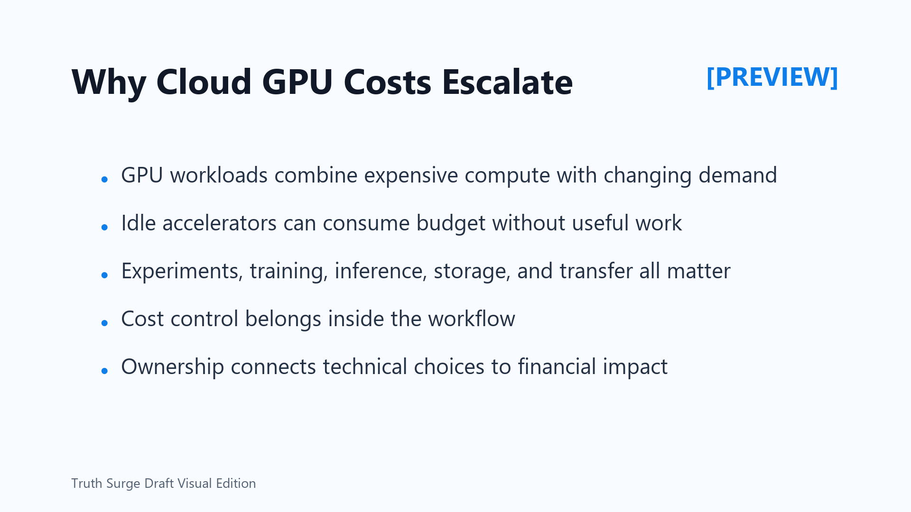

Why Cloud GPU Costs Escalate
Connecting to LMS... Progress: in progress

Narration
Cloud GPU workloads can become expensive quickly because they combine high-value accelerator capacity with fast-changing engineering demand. A single experiment, notebook, training job, evaluation run, or inference deployment may be reasonable by itself. The cost grows when many of those activities run without clear ownership, limits, or cleanup.
Idle time is one of the most common sources of waste. A notebook can be open while no useful work is running. A worker can wait for data while the GPU is allocated. A training run can fail early but leave related resources behind. The bill reflects allocated resources, not only productive model progress.
GPU cost is also more than accelerator time. Datasets, checkpoints, logs, artifacts, managed orchestration, monitoring, storage snapshots, and data movement all affect the final cost. Production inference adds another pattern: cost follows demand, latency targets, scaling rules, and model efficiency.
The practical lesson is that cost control is an engineering discipline. It should be designed into workflow defaults, permissions, schedules, job queues, shutdown policies, monitoring, and review habits. Waiting for a surprise bill before adding controls usually means the system is already hard to understand.
Strong ownership matters. Teams should know who owns a workload, why it exists, what value it supports, and when it should stop. When technical decisions are connected to financial impact, engineers can reduce waste without blocking useful work. The best cost conversations are specific: which job, which owner, which purpose, which limit, and which cleanup rule.